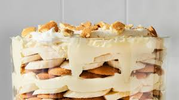

|  |
- 1 (5 ounce) package vanilla instant pudding mix
- 2 cups cold milk
- 1 (14 ounce) can sweetened condensed milk
- 1 tablespoon vanilla extract
- 1 (8 ounce) Cool Whip, thawed
- 1 (11 ounce) box Nabsico vanilla wafers
- 5 -6 vine ripe bananas, peeled and sliced
- Powdered Sugar
|